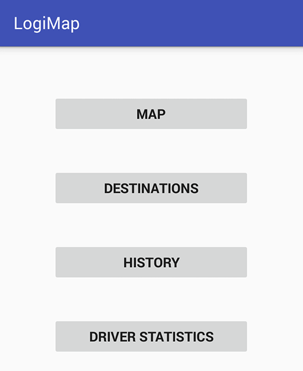
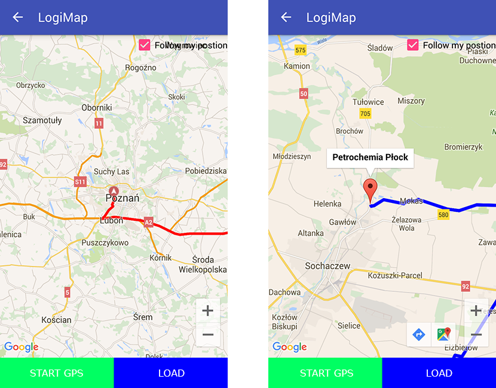
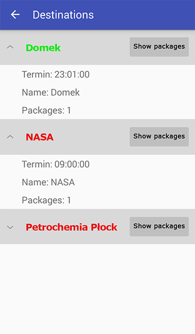
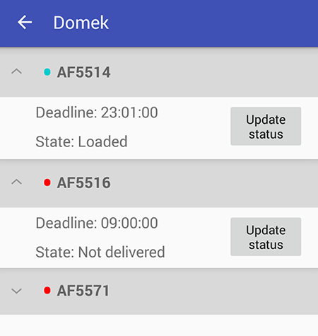
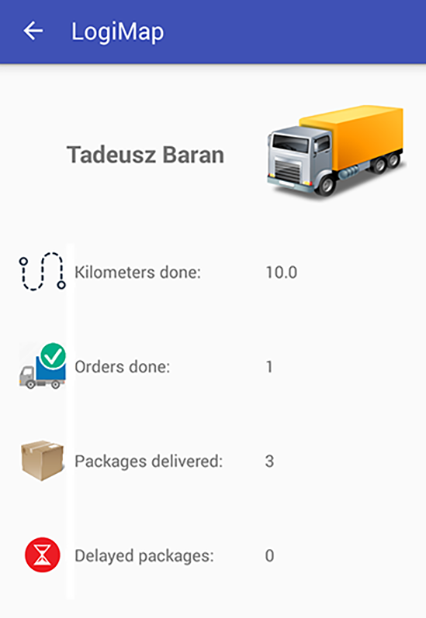
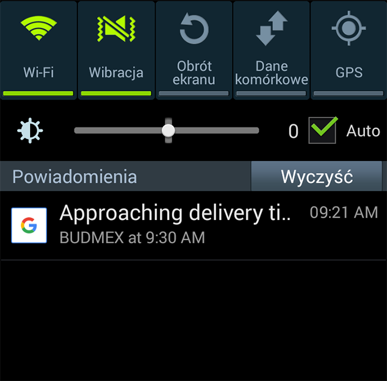
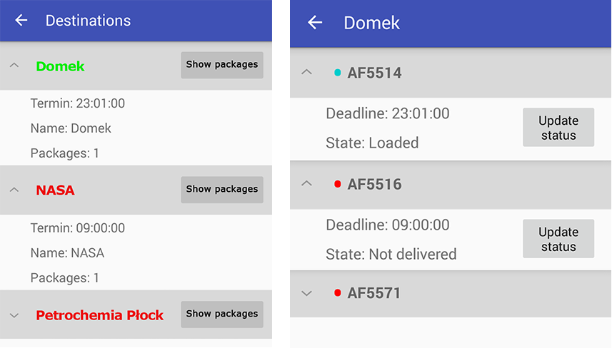
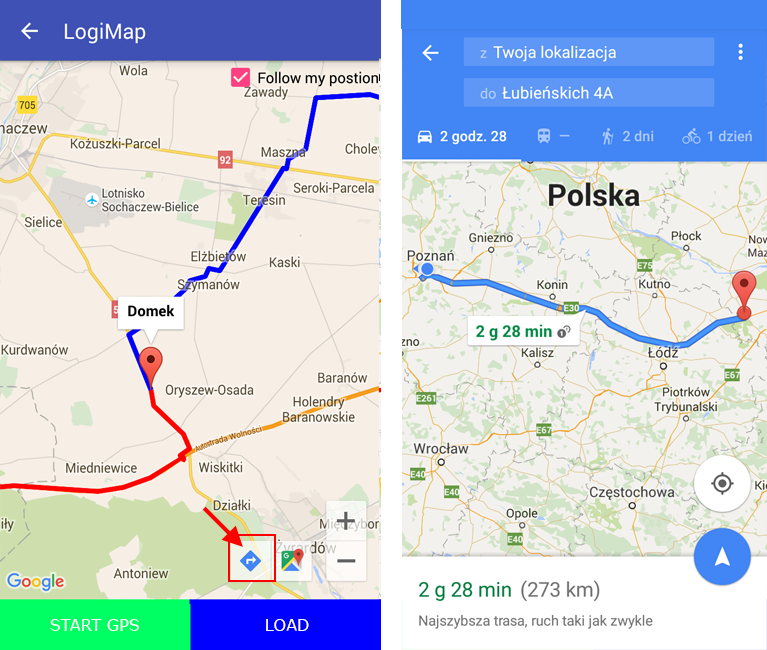

LogiMap
Hubert Kaźmierczak Kamil Szczepański Paweł Plichta
dr hab. inż. Grzegorz Pawlak
Temat pracy
System wsparcia optymalizacji obsługi dystrybucji logistycznej dla produktów świeżych
Cele
- Projekt i implementacja
- aplikacji mobilnej
- serwera REST
- bazy danych
- Integracja z Google Maps
- Dostosowanie apliakcji do urządzeń mobilnych
- Wykorzystanie narzędzi IO
Motywacja
- Stale powiększający się rynek urządzeń mobilnych
- Istniejące rozwiązania:
- Są drogie
- Pomijają kierowcę jako czynnego użytkownika
- Wygląd > prostota użytkowania
- Wykorzystanie istniejących systemów wyznaczających trasy i przydzielających zlecenia
Zasoby
- Kierowca
- Zlecenie
- Trasa
- Miejsca docelowe
- Paczki
Technologie


Android SDK
Aplikacja mobilna na urządzenia z systemem Android w wersji 4.2 lub wyższej
Logika serwera w formie serwisu REST.
Baza danych przechowująca dane wykorzystywane przez aplikację mobilną.
Dodatkowe narzędzia


Cykl biznesowy
Logowanie

Menu główne
Nowe zlecenie

Podgląd mapy
Miejsca docelowe
Lista załadunkowa
Historia

Statystyki kierowcy
Dodatkowe cechy
Powiadomienia
Kolorowe oznaczenia
Nawigacja Google
LogiMap
Hubert Kaźmierczak Kamil Szczepański Paweł Plichta
dr hab. inż. Grzegorz Pawlak